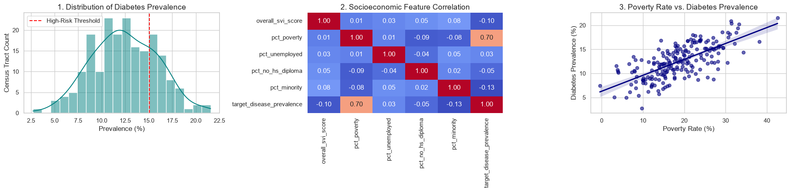
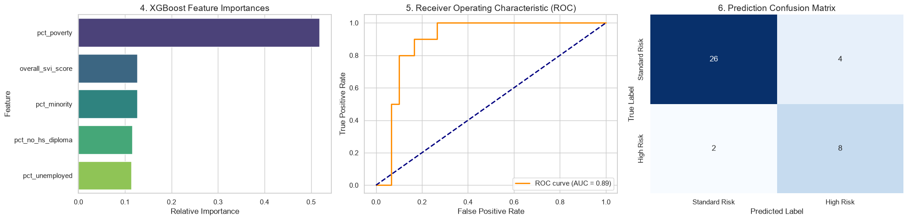

Eve Kontcho Data Science & Analytics
Hi, I'm Eve Kontcho. I specialize in data analytics, statistical modeling, and quantitative decision systems. I bridge the gap between complex datasets, predictive machine learning models, and cross-functional Agile Scrum execution to deliver evidence-based, user-centric outcomes.
Education & Core Competencies
Theoretical grounding in statistical inference and computer science, combined with engineering experience across complex datasets.
LOUISIANA STATE UNIVERSITY
Data Analytics and Information Systems undergraduate applying Python, R, and SQL to statistical modeling, predictive analytics, and large-scale quantitative datasets alongside formal Agile Scrum leadership. Proven ability to translate raw operational and research data into actionable insights while facilitating cross-functional sprint delivery.
Database Management & SQL, Predictive Modeling, Agile & Scrum Project Management, Statistical Inference, Quantitative Decision Analysis, and Systems Analysis & Design.
PROGRAMMING & STATISTICAL MODELING
Python, R, SQL, JMP, Statistical Inference, Predictive Modeling, Dose-Response & Cohort Analysis, XGBoost, Scikit-Learn.
DATABASE & DATA PIPELINES
SQL (PostgreSQL, SQLite), Pandas, NumPy, Data Cleaning & Wrangling, Median Imputation, Star Schema ETL Pipelines, Query Optimization.
AGILE & SCRUM PROJECT MANAGEMENT
Scrum Master Facilitation, Sprint Planning & Burndown Velocity, Planning Poker (Fibonacci), Product Backlog Grooming, User Story Mapping, Jira / Agile Boards.
TOOLS, REPORTING & LANGUAGES
Advanced Excel, PowerPoint, Word, Git, Business Intelligence Reporting, Canva, Adobe Creative Suite. Fluent in English (Native) and French (Bilingual).
Projects & Case Studies
Bridging predictive machine learning, epidemiological analytics, and enterprise Agile Scrum leadership to deliver user-centric, data-driven systems.
Predictive Epidemiology: Forecasting Chronic Disease Risk Zones using XGBoost
Public health resources are finite. This project demonstrates how to use socioeconomic, environmental, and demographic data to proactively identify localized geographic areas at the highest risk for chronic disease progression (specifically diabetes) before outbreaks escalate. By integrating CDC PLACES prevalence metrics and CDC SVI census tract vulnerability indicators with SQLite and XGBoost, this system translates complex demographic data into targeted public health interventions.


Caffeine Finder: Agile Project Management & Scrum Facilitation
Caffeine Finder is a campus-tailored mobile platform designed to help LSU students quickly locate nearby caffeine sources—aggregating cafes, coffee shops, campus dining locations, vending areas, real-time operating hours, dietary tags, price tiers, and study amenities (Wi-Fi, outlets, seating). As Scrum Master preparing for the Certified ScrumMaster (CSM) credential, I facilitated a 7-person cross-functional team through a 10-day sprint cycle, managed a 29-item Product Backlog, executed Planning Poker estimation, tracked velocity via a Sprint Burndown Chart (100% of 87 story points completed), and led retrospectives to drive continuous improvement.
| Priority | Backlog Item | User Story (Requirement & Business Value) | Planning Poker |
|---|---|---|---|
| #1 | Display caffeine locations | As a student, I want a list of nearby cafes, restaurants, and campus vendors selling caffeinated drinks so that I can compare my options. | 20 pts |
| #2 | Display location details & hours | As a student, I want each location profile to show its address, hour, and description so that I can decide where and when to visit. | 5 pts |
| #3 | Search by location name | As a student, I want to search for a location by name so that I can quickly find a specific cafe, restaurant, or campus vendor. | 5 pts |
| #4 | Display caffeine locations on map | As a student, I want caffeine locations shown as labeled map pins so that I can compare where the available options are located. | 8 pts |
| #5 | Display current position on map | As a student, I want my current position shown on the map so that I can use it as a reference for nearby caffeine locations. | 13 pts |
| #6 | Sort locations by distance | As a student, I want locations ordered from nearest to farthest based on my current position so that I can choose the closest option. | 5 pts |
| #7 | Show open or closed status | As a student, I want to know the current opened or closed status of the shop so I know if it is available at the time of search. | 3 pts |
| #8 | Filter to open locations | As a student, I want an "Open Now" filter to hide any closed locations so only currently available options show in the search. | 3 pts |
| #9 | Provide navigation directions | As a student, I want to open turn-by-turn directions to a selected location so that I can navigate there easily. | 20 pts |
| #10 | Display drink menus | As a student, I want to view a location’s drink menu so that I can see whether it offers a beverage I want. | 5 pts |
- Feature & User Story Definition: Well-articulated student-centric user stories anchored on clear customer value.
- Planning Poker Engagement: Deep technical discussion and alignment across all 5 developers during story point estimation.
- Team Dynamic & Alignment: Strong collaborative culture between Product Owner, Scrum Master, and developers.
- Ceremony Productivity: Disciplined standups and sprint planning kept strictly to timeboxes.
- Backlog Feature Overlaps: Initial stories had overlapping scopes between menus, dietary tags, and location details.
- Technical Story Complexity: Translating complex technical integrations (GPS & routing APIs) into pure user stories was challenging.
- Communication Channels: Ad-hoc discussions occurred across split channels rather than a unified team log.
- Pre-Planning Technical Spikes: Gained technical architectural clarity before sprint planning to avoid estimation blind spots.
- Granular Functional Scoping: Defined explicit Acceptance Criteria and Definition of Done (DoD) for each backlog item.
- Centralized Task Tracking: Consolidated blockers and daily status in a shared backlog repository for complete transparency.
Resume & Work Experience
Biomedical research at LSU School of Veterinary Medicine and healthcare telemetry analytics at Trubridge.
Eve_Stephanie_Kontcho_Resume.pdf
Data Science & Analytics Resume (PDF)
PATHOBIOLOGICAL SCIENCE RESEARCHER
OCT. 2025 — PRESENTApplying computational and statistical modeling to oncology and biomedical datasets to inform drug efficacy and translational research.
- Applied R-based statistical modeling to analyze clinical data from A375 melanoma cell lines, bridging in vitro drug-response models with human clinical trial outcomes.
- Quantified dose-effect relationships and drug-drug interactions using CompuSyn, generating preclinical datasets used to inform drug safety and efficacy assessments.
- Modeled tumor growth dynamics and physiological treatment response to support translational oncology research.
DATA ANALYST EXTERN
NOV. 2025 — DEC. 2025Conducted healthcare analytics and patient outcome modeling across large-scale hospital telemetry.
- Applied descriptive analytics to large-scale healthcare datasets, building reports on patient admission rates and medication adherence for stakeholder review.
- Performed diagnostic and cohort analysis to identify root-cause drivers of patient readmission trends, surfacing insights for clinical process improvement.
Get in Touch
Whether you have an interesting data analytics role, research inquiry, or project collaboration in mind, feel free to reach out.